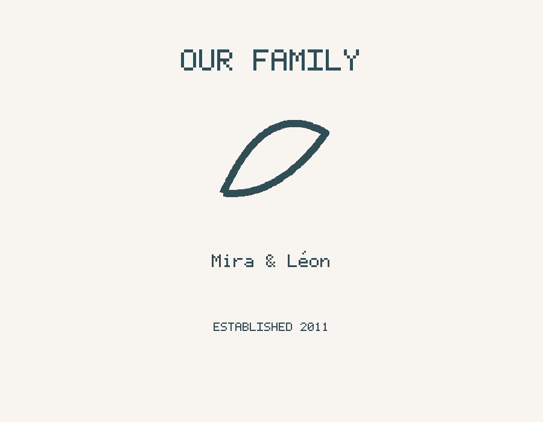
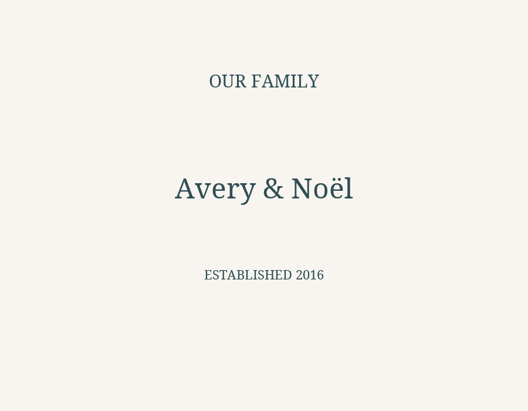

Retained Option A baseline

Immutable synthetic-typography baseline; retained unchanged.
Separate text-only candidate using pinned Noto Serif Regular 2.007 under SIL OFL 1.1. Fictional sample: Avery & Noël / 2016. Proposed en-US only. No linguistic approval, whole-artwork rights certification, supplier geometry, native Printify compatibility or production authorization.

Immutable synthetic-typography baseline; retained unchanged.

No botanical artwork. Fixed font sizes; overflow and unsupported glyphs reject. Empty optional established removes the entire line.
Complete font license · Copyright and redistribution notice · Pinned font source · Artifact hashes · Offline final SVG
900 × 700 is a diagnostic canvas, not a supplier print area. Do not upload, publish, bind to a production template or send to fulfillment. STOP ALL ON; external lock ON; automation OFF; RELEASE HOLD.